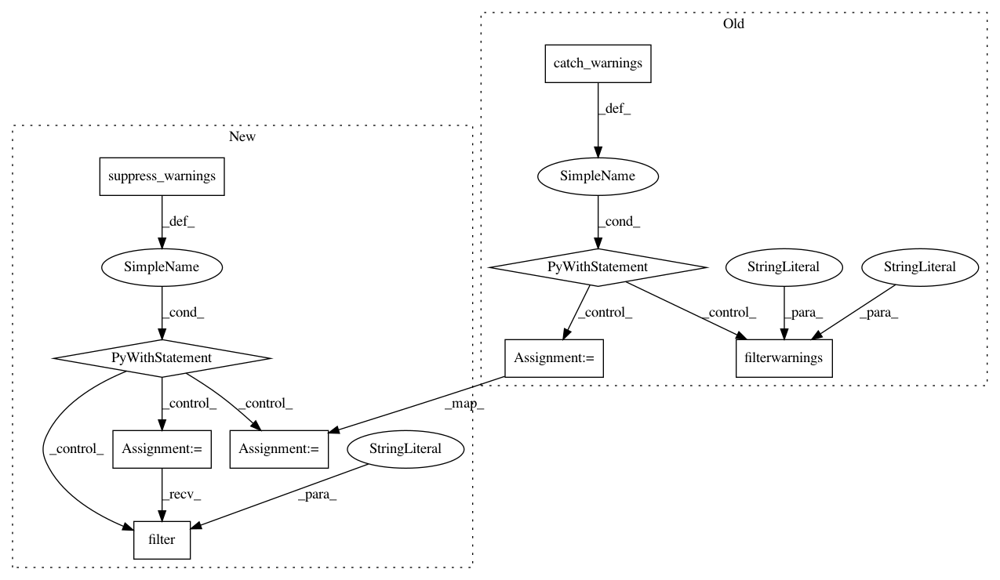

bf2c49078d1306382e4eb50b144d357ec039aee9,scipy/ndimage/tests/test_measurements.py,,test_standard_deviation01,#,718
Before Change
def test_standard_deviation01():
olderr = np.seterr(all="ignore")
try:
with warnings.catch_warnings():
// Numpy 1.9 gives warnings for mean([])
warnings.filterwarnings("ignore", message="Mean of empty slice.")
for type in types:
input = np.array([], type)
output = ndimage.standard_deviation(input)
assert_(np.isnan(output))
finally:
np.seterr(**olderr)
After Change
try:
for type in types:
input = np.array([], type)
with suppress_warnings() as sup:
sup.filter(RuntimeWarning, "Mean of empty slice")
output = ndimage.standard_deviation(input)
assert_(np.isnan(output))
finally:
np.seterr(**olderr)
In pattern: SUPERPATTERN
Frequency: 3
Non-data size: 9
Instances
Project Name: scipy/scipy
Commit Name: bf2c49078d1306382e4eb50b144d357ec039aee9
Time: 2017-07-15
Author: cdouglass256@gmail.com
File Name: scipy/ndimage/tests/test_measurements.py
Class Name:
Method Name: test_standard_deviation01
Project Name: scipy/scipy
Commit Name: bf2c49078d1306382e4eb50b144d357ec039aee9
Time: 2017-07-15
Author: cdouglass256@gmail.com
File Name: scipy/ndimage/tests/test_measurements.py
Class Name:
Method Name: test_variance01
Project Name: scipy/scipy
Commit Name: 1c880c79459a63c8e36f48966142aea56626818e
Time: 2017-07-10
Author: cdouglass256@gmail.com
File Name: scipy/sparse/csgraph/tests/test_graph_components.py
Class Name:
Method Name: test_cs_graph_components